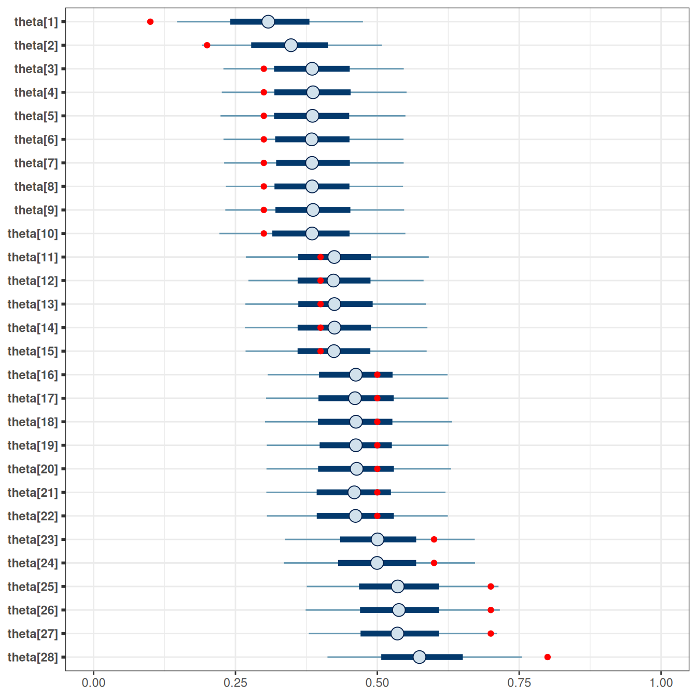
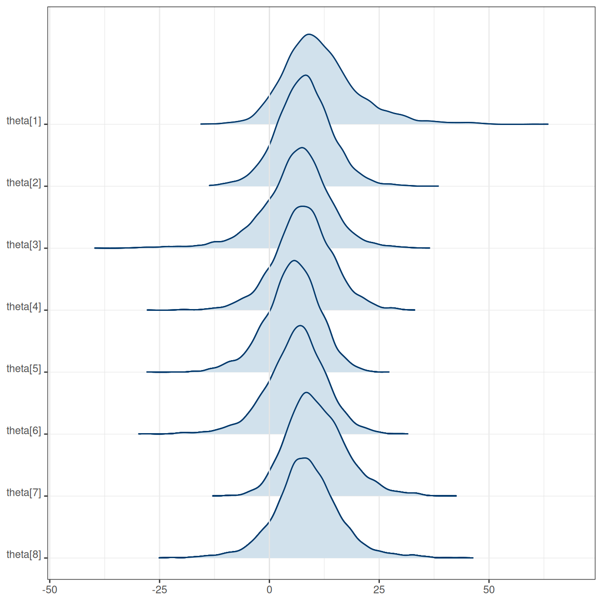

7 Hierarchical Models
Although many statistical models can be fitted using Bayesian or frequentist methods, some models are more naturally used in the Bayesian framework. One class of such models is the family of hierarchical models. Consider situations when the data contain clusters, such as multiple data points in each of many participants, or multiple participants in each of several treatment conditions. While it is possible to run \(J\) Bayesian analyses for the \(J\) subsets of the data, it is usually more efficient to pool the data together. In this approach, each cluster \(j\) has some parameters \(\theta_j\), and these \(J\) \(\theta\) values themselves come from a common distribution. Figure 7.1 shows a graphical representation of the concept of pooling. This is the same idea as multilevel modeling, a topic we will discuss more later in the course.
A hierarchical model is one in which some higher-level distributions govern one or more parameters, and those higher-level distributions are characterized by hyperparameters and can be assigned hyperpriors.
Hierarchical models are commonly used to study and account for individual differences in some model parameters.
In this note, you will see two examples, one from a textbook (Kruschke, 2015) with a hierarchical Bernoulli/binomial model, and another from a classic data set with eight schools, modelled by a hierarchical normal model.
7.1 Hierarchical Bernoulli/Binomial
We will first consider a therapeutic touch example (Kruschke, 2015, Chapter 9). Therapeutic touch is a technique in alternative medicine to relieve pain, but scientific evidence does not support its effectiveness. The data here are from an experiment where the experimenter randomly hovered their hand over either the participant’s left or right hand, and the participant had to guess which hand was being hovered without seeing. This is repeated 10 times for each participant. There are a total of 28 participants in the dataset.
Previously, we have seen the Bernoulli model for \(N\) outcomes (i.e., whether the guess is correct): \[ y_i \sim \text{Bern}(\theta), \text{for }i = 1, \ldots, N \] We assumed exchangeability with \(\theta\) being the participant’s “ability” to guess correctly.
Alternative Parameterization of Beta
In the last class, we have used the Beta(a, b) prior for a Bernoulli outcome, such that \[ P(\theta \mid a, b) \propto \theta^{a - 1} (1 - \theta)^{b - 1}. \] However, in hierarchical models to be discussed later, it is beneficial to consider another way to express the Beta distribution, in terms of the prior mean, \(\mu = a / (a + b)\), \(\mu \in [0, 1]\), and the concentration, \(\kappa = a + b\), \(\kappa \in [0, \infty)\). So, instead of the above formula, we can write \[ P(\theta \mid \mu, \kappa) \propto \theta^{\mu \kappa - 1} (1 - \theta)^{(1 - \mu) \kappa - 1}. \] The two expressions represent exactly the same distribution, but just in terms of parameters of different meanings. Therefore, they are referred to as different parameterization of the Beta distribution.
7.1.1 Multiple Bernoulli = Binomial
With \(N\) exchangeable Bernoulli observations, an equivalent but more efficient way to code the model is to use the binomial distribution. Let \(z = \sum_{i = 1}^N y_i\), then \[ z \sim \mathrm{Bin}(N, \theta) \]
7.1.2 Multiple Binomial Observations
Now, because we have multiple participants, we could study whether each participant had noticeable differences in their guessing ability. We can use a binomial model for each participant, from participant 1 to participant \(J\): \[ \begin{aligned} z_1 \sim \mathrm{Bin}(N_1, \theta_1) \\ z_2 \sim \mathrm{Bin}(N_2, \theta_2) \\ \vdots \\ z_J \sim \mathrm{Bin}(N_J, \theta_J) \end{aligned} \]
Or instead of writing \(J\) equations, we can use the subscript \(j\) to refer to each participant: \[ z_{\textcolor{red}{j}} \sim \mathrm{Bin}(N_{\textcolor{red}{j}}, \theta_{\textcolor{red}{j}}) \]
If we believe that all participants have the same ability, then we could consider the model \[ z_j \sim \mathrm{Bin}(N_j, \theta), \] which still contains only one parameter, \(\theta\). However, if we have reason to believe that the coins have different biases, then we should have \[z_j \sim \mathrm{Bin}(N_j, \theta_{\color{red}{j}}),\] with parameters \(\theta_1, \ldots, \theta_j\).
We can assign priors to each \(\theta_j\). However, suppose our prior belief is that there’s something common among the different participants (e.g., they’re all human beings), so they come from a common distribution. In that case, we can have common parameters for the prior distributions of the \(\theta\)s: \[ \theta_j \sim \mathrm{Beta\_Proportion}(\mu, \kappa), \] note I use Beta_Proportion to denote the mean parameterization. Here, we express the prior belief that the mean ability of the different participants is \(\mu\), and how each participant differs from the mean depends on \(\kappa\). Now, \(\mu\) and \(\kappa\) are hyperparameters. We can assign some fixed values to \(\mu\) and \(\kappa\), as if we know what the average ability is. However, the power of the hierarchical model is that we can put priors (or hyper priors) on \(\mu\) and \(\kappa\), and obtain posterior distributions of them, based on what the data say.
What priors to use for \(\mu\) and \(\kappa\)? \(\mu\) is relatively easy because it is the mean ability; if we put a Beta prior for each participant’s ability, we can again use a Beta prior for the mean ability. \(\kappa\) is more challenging. A larger \(\kappa\) means that the participants’ abilities are more similar to each other. We can perform a prior predictive check to see what the data look like. As a starting point, some textbook (e.g., chapter 9 of Kruschke, 2015) suggested using Gamma(0.01, 0.01). So the full model in our case, with a weak Beta(1.5, 1.5) prior on \(\mu\), is
Model: \[ \begin{aligned} z_j & \sim \mathrm{Bin}(N_j, \theta_j) \\ \theta_j & \sim \mathrm{Beta2}(\mu, \kappa) \end{aligned} \] Prior: \[ \begin{aligned} \mu & \sim \mathrm{Beta}(1.5, 1.5) \\ \kappa & \sim \mathrm{Gamma}(0.01, 0.01) \end{aligned} \]
We will import the data and fit the model
# Data file from GitHub
tt_url <- paste0(
"https://github.com/boboppie/kruschke-doing_bayesian_data_analysis/",
"raw/master/2e/TherapeuticTouchData.csv"
)
tt_dat <- read.csv(tt_url)
# Get aggregated data by summing the counts
tt_agg <- tt_dat |>
group_by(s) |>
summarise(y = sum(y), # total number of correct
n = n())
# Plot proportion correct distribution
p1 <- ggplot(tt_agg, aes(x = y / n)) +
geom_histogram(binwidth = .1) +
labs(x = "Proportion Correct")
7.1.3 Stan Code
data {
int<lower=0> J; // number of clusters (e.g., studies, persons)
array[J] int y; // number of "1"s in each cluster
array[J] int N; // sample size for each cluster
}
parameters {
// cluster-specific probabilities
vector<lower=0, upper=1>[J] theta;
real<lower=0, upper=1> mu; // overall mean probability
real<lower=0> kappa; // overall concentration
}
model {
y ~ binomial(N, theta); // each observation is binomial
// Priors
theta ~ beta_proportion(mu, kappa);
mu ~ beta(1.5, 1.5); // weak prior
kappa ~ gamma(.1, .1); // prior recommended by Kruschke
}
generated quantities {
// Prior and prior predictive
real<lower=0, upper=1> prior_mu = beta_rng(1.5, 1.5);
real<lower=0> prior_kappa = gamma_rng(.1, .1);
vector<lower=0, upper=1>[J] prior_theta;
for (j in 1:J) {
prior_theta[j] = beta_proportion_rng(prior_mu, prior_kappa);
}
array[J] int prior_ytilde = binomial_rng(N, prior_theta);
// Posterior predictive
array[J] int ytilde = binomial_rng(N, theta);
}hbin_mod <- cmdstan_model("stan_code/hierarchical-binomial.stan")7.1.4 Prior predictive
You can use Stan to sample the prior and obtain the prior predictive distribution; here, I show how to do it in R, with a Gamma(.01, .01) prior on \(\kappa\):
set.seed(1706)
plist <- vector("list", 12L)
plist[[1]] <- p1 +
labs(x = "Observed data") +
theme(axis.title.x = element_text(color = "red"))
num_subjects <- 28
for (s in 1:11) {
# Get prior values of mu and kappa
mu_s <- rbeta(1, shape1 = 1.5, shape2 = 1.5)
kappa_s <- rgamma(1, shape = 0.01, rate = 0.01)
# Generate theta
theta <- rbeta(num_subjects,
shape1 = mu_s * kappa_s,
shape2 = (1 - mu_s) * kappa_s)
# Generate data
new_y <- rbinom(num_subjects, size = tt_agg$n, prob = theta)
plist[[s + 1]] <-
p1 %+% mutate(tt_agg, y = new_y) +
labs(x = paste("Simulated data", s)) +
theme(axis.title.x = element_text(color = "black"))
}
gridExtra::grid.arrange(grobs = plist, nrow = 3)The prior on \(\kappa\) is not very realistic because it pushes the bias to either 0 or 1. Using something like Gamma(0.1, 0.1) or Gamma(2, 0.01) may be more reasonable (you can try it out yourself).
7.1.5 Calling Stan
tt_fit <- hbin_mod$sample(
data = list(J = nrow(tt_agg),
y = tt_agg$y,
N = tt_agg$n),
seed = 1716, # for reproducibility
refresh = 1000
)Running MCMC with 4 sequential chains...
Chain 1 Iteration: 1 / 2000 [ 0%] (Warmup)
Chain 1 Iteration: 1000 / 2000 [ 50%] (Warmup)
Chain 1 Iteration: 1001 / 2000 [ 50%] (Sampling)
Chain 1 Iteration: 2000 / 2000 [100%] (Sampling)
Chain 1 finished in 0.3 seconds.
Chain 2 Iteration: 1 / 2000 [ 0%] (Warmup)
Chain 2 Iteration: 1000 / 2000 [ 50%] (Warmup)
Chain 2 Iteration: 1001 / 2000 [ 50%] (Sampling) Chain 2 Informational Message: The current Metropolis proposal is about to be rejected because of the following issue:Chain 2 Exception: beta_proportion_lpdf: Location parameter is 1, but must be less than 1.000000 (in '/tmp/Rtmp2xNIuz/model-9166e680a2e31.stan', line 15, column 2 to column 37)Chain 2 If this warning occurs sporadically, such as for highly constrained variable types like covariance matrices, then the sampler is fine,Chain 2 but if this warning occurs often then your model may be either severely ill-conditioned or misspecified.Chain 2 Chain 2 Iteration: 2000 / 2000 [100%] (Sampling)
Chain 2 finished in 0.3 seconds.
Chain 3 Iteration: 1 / 2000 [ 0%] (Warmup)
Chain 3 Iteration: 1000 / 2000 [ 50%] (Warmup)
Chain 3 Iteration: 1001 / 2000 [ 50%] (Sampling)
Chain 3 Iteration: 2000 / 2000 [100%] (Sampling)
Chain 3 finished in 0.3 seconds.
Chain 4 Iteration: 1 / 2000 [ 0%] (Warmup) Chain 4 Informational Message: The current Metropolis proposal is about to be rejected because of the following issue:Chain 4 Exception: beta_proportion_lpdf: Location parameter is 0, but must be positive! (in '/tmp/Rtmp2xNIuz/model-9166e680a2e31.stan', line 15, column 2 to column 37)Chain 4 If this warning occurs sporadically, such as for highly constrained variable types like covariance matrices, then the sampler is fine,Chain 4 but if this warning occurs often then your model may be either severely ill-conditioned or misspecified.Chain 4 Chain 4 Iteration: 1000 / 2000 [ 50%] (Warmup)
Chain 4 Iteration: 1001 / 2000 [ 50%] (Sampling)
Chain 4 Iteration: 2000 / 2000 [100%] (Sampling)
Chain 4 finished in 0.3 seconds.
All 4 chains finished successfully.
Mean chain execution time: 0.3 seconds.
Total execution time: 1.6 seconds.You can explore the convergence and posterior distributions using the shinystan package
shinystan::launch_shinystan(tt_fit)7.1.6 Table of coefficients
tt_fit$summary(c("theta", "mu", "kappa")) |>
# Use `knitr::kable()` for tabulation
knitr::kable(digits = 2)| variable | mean | median | sd | mad | q5 | q95 | rhat | ess_bulk | ess_tail |
|---|---|---|---|---|---|---|---|---|---|
| theta[1] | 0.31 | 0.31 | 0.10 | 0.10 | 0.15 | 0.47 | 1 | 3268.39 | 2404.91 |
| theta[2] | 0.35 | 0.35 | 0.10 | 0.10 | 0.19 | 0.51 | 1 | 3741.46 | 2422.69 |
| theta[3] | 0.39 | 0.39 | 0.10 | 0.10 | 0.23 | 0.55 | 1 | 4744.99 | 2794.69 |
| theta[4] | 0.39 | 0.39 | 0.10 | 0.10 | 0.23 | 0.55 | 1 | 4859.60 | 3056.80 |
| theta[5] | 0.39 | 0.39 | 0.10 | 0.10 | 0.22 | 0.55 | 1 | 4817.40 | 2485.43 |
| theta[6] | 0.39 | 0.38 | 0.10 | 0.10 | 0.23 | 0.55 | 1 | 5260.92 | 2493.09 |
| theta[7] | 0.39 | 0.38 | 0.10 | 0.10 | 0.23 | 0.55 | 1 | 5586.84 | 2968.73 |
| theta[8] | 0.39 | 0.39 | 0.10 | 0.10 | 0.23 | 0.55 | 1 | 4926.08 | 3008.76 |
| theta[9] | 0.39 | 0.39 | 0.10 | 0.10 | 0.23 | 0.55 | 1 | 4802.85 | 2558.79 |
| theta[10] | 0.39 | 0.39 | 0.10 | 0.10 | 0.22 | 0.55 | 1 | 4743.85 | 2910.25 |
| theta[11] | 0.43 | 0.42 | 0.10 | 0.09 | 0.27 | 0.59 | 1 | 5041.77 | 3066.93 |
| theta[12] | 0.42 | 0.42 | 0.09 | 0.10 | 0.27 | 0.58 | 1 | 6055.56 | 2896.89 |
| theta[13] | 0.43 | 0.42 | 0.10 | 0.10 | 0.27 | 0.59 | 1 | 4898.48 | 3112.24 |
| theta[14] | 0.43 | 0.42 | 0.10 | 0.10 | 0.27 | 0.59 | 1 | 5909.48 | 3065.15 |
| theta[15] | 0.43 | 0.42 | 0.10 | 0.10 | 0.27 | 0.59 | 1 | 6304.56 | 3049.53 |
| theta[16] | 0.46 | 0.46 | 0.10 | 0.10 | 0.31 | 0.62 | 1 | 5642.01 | 3230.67 |
| theta[17] | 0.46 | 0.46 | 0.10 | 0.10 | 0.30 | 0.63 | 1 | 5517.58 | 3108.00 |
| theta[18] | 0.46 | 0.46 | 0.10 | 0.10 | 0.30 | 0.63 | 1 | 5622.46 | 2837.76 |
| theta[19] | 0.46 | 0.46 | 0.10 | 0.09 | 0.31 | 0.63 | 1 | 6228.82 | 3062.79 |
| theta[20] | 0.46 | 0.46 | 0.10 | 0.10 | 0.30 | 0.63 | 1 | 4758.62 | 2538.88 |
| theta[21] | 0.46 | 0.46 | 0.10 | 0.10 | 0.30 | 0.62 | 1 | 5922.64 | 2921.96 |
| theta[22] | 0.46 | 0.46 | 0.10 | 0.10 | 0.31 | 0.62 | 1 | 5218.69 | 3180.07 |
| theta[23] | 0.50 | 0.50 | 0.10 | 0.10 | 0.34 | 0.67 | 1 | 5424.13 | 2936.72 |
| theta[24] | 0.50 | 0.50 | 0.10 | 0.10 | 0.34 | 0.67 | 1 | 5321.61 | 2733.91 |
| theta[25] | 0.54 | 0.54 | 0.10 | 0.10 | 0.38 | 0.71 | 1 | 3861.44 | 2248.48 |
| theta[26] | 0.54 | 0.54 | 0.10 | 0.10 | 0.37 | 0.72 | 1 | 3808.59 | 2430.69 |
| theta[27] | 0.54 | 0.54 | 0.10 | 0.10 | 0.38 | 0.71 | 1 | 3679.86 | 2556.84 |
| theta[28] | 0.58 | 0.57 | 0.10 | 0.11 | 0.41 | 0.75 | 1 | 3005.40 | 2460.66 |
| mu | 0.44 | 0.44 | 0.04 | 0.04 | 0.38 | 0.50 | 1 | 2482.91 | 2932.61 |
| kappa | 18.65 | 16.37 | 9.63 | 7.92 | 7.49 | 36.92 | 1 | 992.72 | 1793.53 |
7.1.7 Posterior Predictive Check
With hierarchical models, there are two types of posterior predictive distributions:
- Same participants but new observations. We can use the model to generate new observations, but the individual parameters (e.g., \(\theta_j\)) remain the same. In our example, this would be the situation where we ask the same 28 participants to each do 10 more trials.
- New participants and new observations. We can use the model to generate new observations with new parameters from the higher-order distribution (e.g., the Beta distribution for \(\theta_j\)). In our example, this would be the situation where we ask a new set of 28 participants to each do 10 more trials.
In our Stan code, I used (1) to check the fit of the observed data. However, (2) can be helpful when one wants to use the model to make predictions of future data, as future data are unlikely to concern exactly the same participants.
# The bayesplot::ppc_bars() unfortunately contains a bug
# (https://github.com/stan-dev/bayesplot/issues/266) at
# the time when I wrote this, so I'll use my own code.
# tt_fit$draws("ytilde", format = "draws_matrix") |>
# ppc_bars(y = tt_agg$y)
yrep <- tt_fit$draws("ytilde", format = "draws_matrix")
yrep_intervals <- apply(
yrep, MARGIN = 1, FUN = \(x) table(factor(x, levels = 0:10))
) |>
apply(MARGIN = 1, FUN = \(x) {
c(
lo = quantile(x, .05)[[1]],
me = median(x),
hi = quantile(x, .95)[[1]]
)
})
data.frame(
y = table(factor(tt_agg$y, levels = 0:10))
) |>
setNames(c("x", "y")) |>
cbind(t(yrep_intervals)) |>
ggplot(aes(x = x, y = y)) +
geom_col(alpha = 0.5) +
geom_pointrange(aes(y = me, ymin = lo, ymax = hi)) +
labs(y = "count", x = NULL)
7.1.8 Derived coefficients
One nice thing about MCMC is that it is straightforward to obtain posterior distributions that are functions of the parameters. For example, even though we only sampled from the posteriors of the \(\theta\)s, we can ask questions like whether there is evidence for a nonzero difference in \(\theta\) between person 1 and person 28.
tt_fit$draws() |>
mutate_variables(
theta1_minus14 = `theta[1]` - `theta[14]`,
theta1_minus28 = `theta[1]` - `theta[28]`,
theta14_minus28 = `theta[14]` - `theta[28]`
) |>
subset(variable = c("theta1_minus14", "theta1_minus28",
"theta14_minus28")) |>
summarise_draws() |>
knitr::kable(digits = 2)| variable | mean | median | sd | mad | q5 | q95 | rhat | ess_bulk | ess_tail |
|---|---|---|---|---|---|---|---|---|---|
| theta1_minus14 | -0.11 | -0.11 | 0.13 | 0.13 | -0.34 | 0.09 | 1 | 4950.80 | 2632.63 |
| theta1_minus28 | -0.27 | -0.26 | 0.15 | 0.16 | -0.53 | -0.03 | 1 | 2312.44 | 3115.27 |
| theta14_minus28 | -0.15 | -0.15 | 0.14 | 0.14 | -0.38 | 0.06 | 1 | 4309.81 | 3013.97 |
7.1.9 Conclusion
As 0.5 is included in the 95% CI of \(\theta\) for all participants, there is insufficient evidence that people can sense “therapeutic touch.”
7.1.10 Shrinkage
mcmc_intervals(tt_fit$draws(),
# plot only parameters matching "theta"
regex_pars = "^theta") +
geom_point(
data = tibble(
parameter = paste0("theta[", 1:28, "]"),
x = tt_agg$y / tt_agg$n
),
aes(x = x, y = parameter),
col = "red"
) +
xlim(0, 1)Scale for x is already present.
Adding another scale for x, which will replace the existing scale.
As can be seen, the posterior distributions are closer to the center than the data (in red). This pooling results from the belief that the participants have something in common.
7.1.11 Multiple Comparisons?
Another benefit of a Bayesian hierarchical model is that you don’t need to worry about multiple comparisons. There are multiple angles on why this is the case, but the basic answer is that the use of common prior distributions builds in the prior belief that the clusters/groups are likely to be equal. See discussion here and here.
7.2 Hierarchical Normal Model
7.2.1 Eight Schools Example
This is a classic data set first analyzed by Rubin (1981). It is also the example used in the RStan Getting Started page. The data contains the effect of coaching from randomized experiments in eight schools. The numbers shown (labelled as y) are the mean difference (i.e., effect size) in performance between the treatment and control groups on SAT-V scores.
In the above data, some numbers are positive, and some are negative. Because the sample sizes are different, the data also contained the standard errors (labelled as sigma) of the effect sizes. Generally speaking, a larger sample size corresponds to a smaller standard error. The research question is
- What is the average treatment effect of coaching?
- Are the treatment effects similar across schools?
7.2.2 Model
Model: \[ \begin{aligned} d_j & \sim N(\theta_j, s_j) \\ \theta_j & \sim N(\mu, \tau) \end{aligned} \] Prior: \[ \begin{aligned} \mu & \sim N(0, 100) \\ \tau & \sim t^+_4(0, 100) \end{aligned} \]
Given the SAT score range, it is unlikely that a coaching program will improve scores by 100 or so, so we use a prior of \(\mu \sim N(0, 100)\) and \(\tau \sim t^+_4(0, 100)\).
The model above is the same as one used in a random-effect meta-analysis. See this paper for an introduction.
7.2.3 Non-Centered Parameterization
The hierarchical model is known to create issues in MCMC sampling, such that the posterior draws tend to be highly correlated even with more advanced techniques like HMC. One way to alleviate that is to reparameterize the model using what is called the non-centered parameterization. The basic idea is that, instead of treating the \(\theta\)s as parameters, one uses the standardized deviation from the mean to be parameters. You can think about it as converting the \(\theta\)s into \(z\) scores, and then sample the \(z\) scores instead of the original \(\theta\)s.
Model: \[ \begin{aligned} d_j & \sim N(\theta_j, s_j) \\ \theta_j & = \mu + \tau \eta_j \\ \eta_j & \sim N(0, 1) \end{aligned} \]
data {
int<lower=0> J; // number of schools
vector[J] y; // estimated treatment effects
vector<lower=0>[J] sigma; // s.e. of effect estimates
}
parameters {
real mu; // overall mean
real<lower=0> tau; // between-school SD
vector[J] eta; // standardized deviation (z score)
}
transformed parameters {
vector[J] theta;
theta = mu + tau * eta; // non-centered parameterization
}
model {
eta ~ std_normal(); // same as eta ~ normal(0, 1);
y ~ normal(theta, sigma);
// priors
mu ~ normal(0, 100);
tau ~ student_t(4, 0, 100);
}hnorm_mod <- cmdstan_model("stan_code/hierarchical-normal.stan")fit <- hnorm_mod$sample(
data = schools_dat,
seed = 1804, # for reproducibility
refresh = 1000,
adapt_delta = 0.9 # to improve convergence
)Running MCMC with 4 sequential chains...
Chain 1 Iteration: 1 / 2000 [ 0%] (Warmup)
Chain 1 Iteration: 1000 / 2000 [ 50%] (Warmup)
Chain 1 Iteration: 1001 / 2000 [ 50%] (Sampling)
Chain 1 Iteration: 2000 / 2000 [100%] (Sampling)
Chain 1 finished in 0.1 seconds.
Chain 2 Iteration: 1 / 2000 [ 0%] (Warmup)
Chain 2 Iteration: 1000 / 2000 [ 50%] (Warmup)
Chain 2 Iteration: 1001 / 2000 [ 50%] (Sampling)
Chain 2 Iteration: 2000 / 2000 [100%] (Sampling)
Chain 2 finished in 0.1 seconds.
Chain 3 Iteration: 1 / 2000 [ 0%] (Warmup)
Chain 3 Iteration: 1000 / 2000 [ 50%] (Warmup)
Chain 3 Iteration: 1001 / 2000 [ 50%] (Sampling)
Chain 3 Iteration: 2000 / 2000 [100%] (Sampling)
Chain 3 finished in 0.1 seconds.
Chain 4 Iteration: 1 / 2000 [ 0%] (Warmup)
Chain 4 Iteration: 1000 / 2000 [ 50%] (Warmup)
Chain 4 Iteration: 1001 / 2000 [ 50%] (Sampling)
Chain 4 Iteration: 2000 / 2000 [100%] (Sampling)
Chain 4 finished in 0.1 seconds.
All 4 chains finished successfully.
Mean chain execution time: 0.1 seconds.
Total execution time: 0.8 seconds.Treatment effect estimates of individual schools (\(\theta\)), average treatment effect (\(\mu\)), and treatment effect heterogeneity (\(\tau\)).
| variable | mean | median | sd | mad | q5 | q95 | rhat | ess_bulk | ess_tail |
|---|---|---|---|---|---|---|---|---|---|
| theta[1] | 11.70 | 10.60 | 8.69 | 7.38 | -0.20 | 27.60 | 1.00 | 3475.69 | 3347.72 |
| theta[2] | 7.98 | 7.93 | 6.31 | 5.82 | -2.18 | 18.34 | 1.00 | 5870.22 | 3353.39 |
| theta[3] | 6.13 | 6.77 | 7.97 | 6.50 | -7.14 | 17.85 | 1.00 | 4318.80 | 2941.48 |
| theta[4] | 7.69 | 7.75 | 6.75 | 6.15 | -3.43 | 18.53 | 1.00 | 5452.05 | 3268.65 |
| theta[5] | 5.22 | 5.53 | 6.22 | 5.82 | -5.64 | 14.70 | 1.00 | 4118.93 | 3165.15 |
| theta[6] | 6.15 | 6.52 | 6.87 | 6.15 | -5.19 | 16.86 | 1.00 | 4526.45 | 3352.39 |
| theta[7] | 10.80 | 10.14 | 6.78 | 6.32 | 0.88 | 23.09 | 1.00 | 4445.48 | 3533.95 |
| theta[8] | 8.55 | 8.33 | 7.74 | 6.42 | -3.59 | 21.11 | 1.00 | 4978.08 | 3232.97 |
| mu | 7.95 | 8.00 | 5.26 | 4.97 | -0.43 | 16.20 | 1.00 | 2917.45 | 1987.36 |
| tau | 6.75 | 5.31 | 5.91 | 4.84 | 0.55 | 17.53 | 1.01 | 1316.86 | 1673.79 |
On average, based on the 90% CI, coaching seemed to improve SAT-V by -0.43 to 16.2 points. There was substantial heterogeneity across schools.
We can also get the probability that the treatment effect was > 0:
# Obtain draws
draws_mu <- fit$draws("mu", format = "draws_matrix")
mean(draws_mu > 0)[1] 0.93975Here are the individual-school treatment effects:
mcmc_areas_ridges(fit$draws(), regex_pars = "theta")

7.2.4 Prediction Interval
Posterior distribution of the true effect size of a new study, \(\tilde \theta\)
# Prediction Interval
# (can also be done in Stan, as in the previous example)
fit$draws(c("mu", "tau")) |>
mutate_variables(
theta_tilde = rnorm(4000, mean = mu, sd = tau)) |>
summarise_draws() |>
knitr::kable(digits = 2)| variable | mean | median | sd | mad | q5 | q95 | rhat | ess_bulk | ess_tail |
|---|---|---|---|---|---|---|---|---|---|
| mu | 7.95 | 8.00 | 5.26 | 4.97 | -0.43 | 16.20 | 1.00 | 2917.45 | 1987.36 |
| tau | 6.75 | 5.31 | 5.91 | 4.84 | 0.55 | 17.53 | 1.01 | 1316.86 | 1673.79 |
| theta_tilde | 8.03 | 7.87 | 10.19 | 7.00 | -6.69 | 22.89 | 1.00 | 3947.08 | 3042.56 |
The posterior interval for \(\tilde \theta\) indicates a range of the treatment effect for a new study.